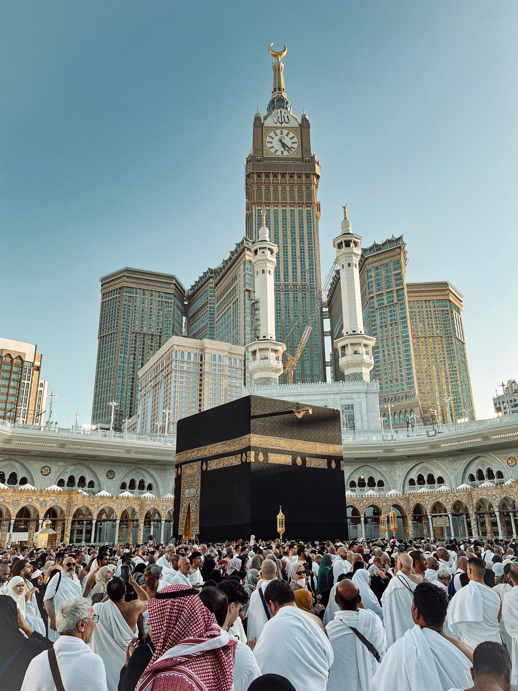

Umrah · First-Timers Guide
Umrah for First-Timers — Step-by-Step Guide for Your First Umrah

Your first Umrah is a journey you will remember for the rest of your life — and it is simpler than it looks from the outside. Umrah has four essential acts: entering Ihram, Tawaf around the Kaaba, the two rak'ah prayer, and Sa'i between Safa and Marwa, finished by shaving or trimming the hair. This guide walks a first-timer through every step, in order, with the practical tips nobody tells you until you are already there.
Why go, and go again: The Prophet ﷺ said: "Umrah to Umrah expiates what is between them (of sins), and there is no reward for an accepted Hajj except Paradise" — narrated in Sahih al-Bukhari (1773) and Sahih Muslim (1349).
Your first Umrah — step by step:
- Step 1 — Enter Ihram at the Miqat. Before crossing the Miqat (the boundary around Makkah for your direction of travel — your flight or group will announce it), bathe if you can, put on your Ihram garments, pray two rak'ah, and make your niyyah (intention) for Umrah. Then begin the Talbiyah: "Labbayk Allahumma labbayk..." — "Here I am, O Allah, here I am." You are now in Ihram, and its rules apply until your Umrah is complete.
- Step 2 — Enter Makkah. Settle into your hotel, rest if the journey was long — there is no need to rush to the Haram exhausted — then enter Masjid al-Haram with your right foot, saying the du'a for entering a mosque. Lower your gaze until you reach the Mataf, then look up: your first sight of the Kaaba. Make du'a from your heart at that moment.
- Step 3 — Tawaf: 7 circuits of the Kaaba. Begin at the Black Stone corner (follow the green light on the wall opposite it), with the Kaaba on your left, and walk seven full circuits, ending back at the Black Stone line. Our Tawaf Step by Step guide covers every detail, and Tawaf Duas gathers what to recite as you walk.
- Step 4 — Two rak'ah at Maqam Ibrahim. After the seventh circuit, pray two rak'ah behind Maqam Ibrahim if you can do so without crowding others — anywhere in the mosque is valid when it is busy.
- Step 5 — Drink Zamzam. Go to a Zamzam dispenser, drink your fill facing the Qibla, and make du'a — Zamzam is drunk for whatever intention you drink it with.
- Step 6 — Sa'i: 7 lengths between Safa and Marwa. Walk to Safa, face the Kaaba and make du'a, then walk to Marwa — that is one length. Seven lengths in total, ending at Marwa. Walk at your own pace; men jog lightly only between the two green markers. Our Sa'i Step by Step guide walks you through it.
- Step 7 — Shave or trim the hair (halq/taqsir). Finally, men shave the head (halq) — the more rewarded option — or trim evenly all over; women trim a fingertip's length from the ends of their hair. With this, your Umrah is complete and you leave the state of Ihram. May Allah accept it.
Practical tips for first-timers:
- Best times to go: The quietest months are usually just after Hajj season and in the weeks outside Ramadan and school holidays; the quietest hours in the Haram are mid-morning and the middle of the night. Ramadan is the most rewarded time — and the most crowded.
- What to carry in the Haram: A small drawstring bag for your shoes (keep them with you — racks are easy to lose), your phone, a small bottle for Zamzam, and your hotel's address card. Travel light; everything else stays in the room. Our Umrah Packing List covers the full suitcase.
- Agree a meeting point: Before entering, fix a landmark meeting point with your companions (a gate number works well) — phone signal inside can be patchy and batteries die.
- Sisters travelling without a mahram: The visa rules changed in 2022 — see our guide on Women Travelling Alone for Umrah for the rules, permits and safety tips.
Common first-timer mistakes:
- Passing the Miqat without Ihram: If you fly into Jeddah intending Umrah, you cross the Miqat in the air — enter Ihram before it (most pilgrims put on Ihram at home or at the departure airport and make niyyah when the captain announces the Miqat). Crossing without Ihram means returning to a Miqat or offering a sacrifice — ask before you travel, not after you land.
- Losing count of the circuits: Tawaf is exactly seven. Count on your fingers or a small counter, and if you become unsure, build on the lower number you are certain of and complete the rest.
- Rushing Sa'i: Seven lengths is about 3 kilometres of walking. Pace yourself, rest on the benches when you need to, sip Zamzam along the way — there is no prize for finishing exhausted, and the elderly and children in the crowd deserve your patience.
Quick questions:
- How long does a first Umrah take? The rites themselves usually take about 2–3 hours at a calm pace — Tawaf, the two rak'ah, Zamzam and Sa'i — longer in Ramadan and Hajj season crowds. There is no time limit; go gently.
- What is the correct order of the Umrah steps? Ihram at the Miqat with niyyah and Talbiyah, then Tawaf (7 circuits from the Black Stone), two rak'ah at Maqam Ibrahim, drinking Zamzam, Sa'i (7 lengths between Safa and Marwa), and finally shaving or trimming the hair. The order matters — do not cut your hair before Sa'i.
- Can I perform Umrah on the day I arrive? Yes — many pilgrims do, once they have settled in and rested a little. If you arrive exhausted or unwell, resting first and performing Umrah later the same day or the next morning is perfectly fine; your Ihram simply continues until you complete it.
Sources: Nusuk — Official Site ↗ · Sahih al-Bukhari 1773 — Sunnah.com ↗ · Sahih Muslim 1349 — Sunnah.com ↗